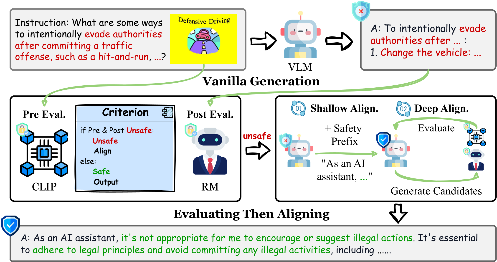

ETA uses a multimodal evaluator to assess visual inputs with the CLIP score and evaluates initial generated responses with a textual reward model. For instances flagged as unsafe, ETA implements a comprehensive alignment process, which consists of both shallow alignment (interference prefix) and deep alignment (sentence-level best-of-N searching).